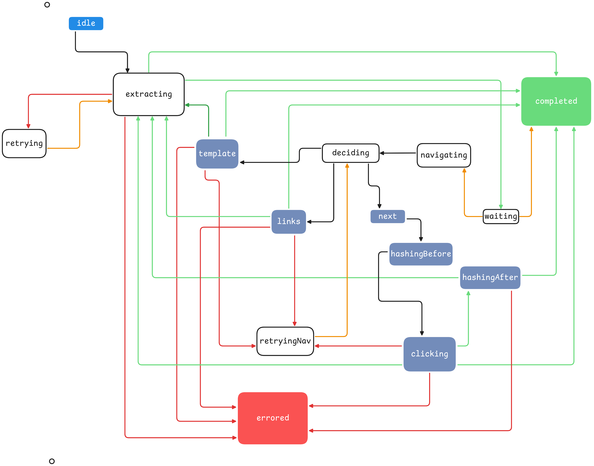

Scraping Engine
The main workflow of the web extension is controlled by a state machine implemented in src/scrapeMachine.ts. Below is a diagram of the states and transitions of the state machine created with Excalidraw. View SVG
{kind=link}
Scraping Engine Workflow

1
2
3
4
5
6
7
8
9
10
11
12
13
14
15
16
17
18
19
20
21
22
23
24
25
26
27
28
29
30
31
- `START` event
- No pagination, complete.
- Dispatch pagination
- Max pages reached, wait for `DELAY_MS` and move to completed.
- Pagination not complete, wait and move to next page
- Dispatch to correct pagination handler
- Template URL base pagination.
- Pagination succeeded, move to extraction.
- Navigation is in test mode or has completed.
- Failed to paginate, retry.
- Pagination failed completely.
- Link list based pagination
- Navigation is in test mode or has completed.
- Pagination succeeded, move to extraction.
- Failed to paginate, retry.
- Pagination failed completely.
- Next button based pagination
- Compute hash of current page
- Try and click next selector element to trigger navigation.
- Next page is in Single Page Application (SPA) mode, so compute hash of page to compare.
- Pagination succeeded, move to extraction.
- Navigation is in test mode or has completed.
- Failed to paginate, retry.
- Pagination failed completely.
- Navigation is in test mode or has completed.
- Pagination succeeded, move to extraction.
- Pagination failed completely.
- Retry pagination
- Extraction failed, retry.
- Try extraction after waiting for delay.
- Extraction failed completely.